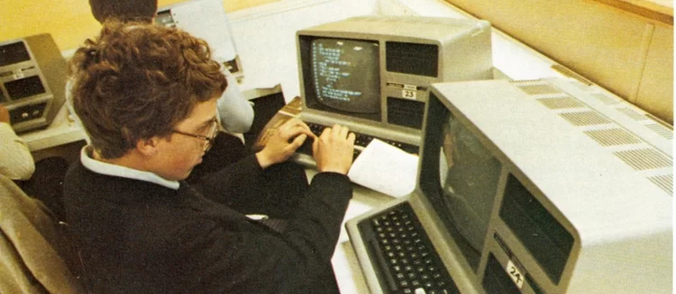
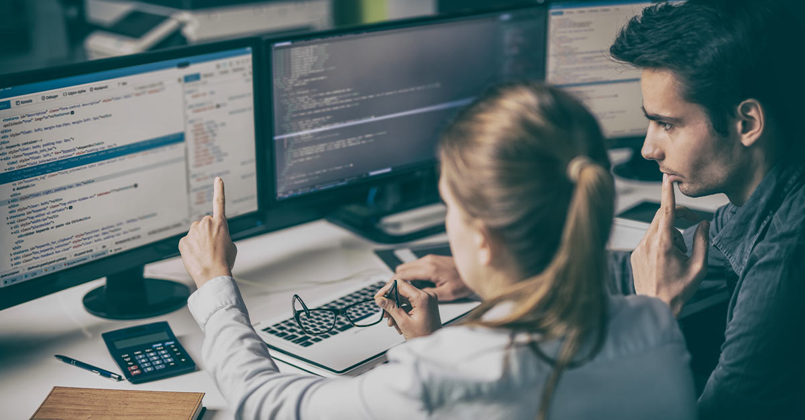

A programação era dominada por mulheres até os anos 1960, mas a valorização da área e estereótipos as excluíram. Pioneiras como Ada Lovelace e Katherine Johnson foram essenciais para avanços tecnológicos. Hoje, iniciativas buscam reverter essa desigualdade e incentivar a inclusão feminina na computação.

Desenvolvedores em 1980
Nos anos 80, os mainframes dominavam o mercado corporativo, enquanto computadores domésticos começaram a se popularizar. Empresas como IBM e Cray lideravam com supercomputadores potentes, mas caros. Modelos como Commodore 64, ZX Spectrum e Apple Macintosh revolucionaram a computação pessoal, trazendo interfaces gráficas e melhor desempenho. O IBM PC estabeleceu o padrão dos computadores modernos, inspirando inúmeras cópias. O Amiga 500 destacou-se em gráficos e áudio, impulsionando a multimídia. Esse período marcou a transição da computação centralizada para o acesso individual e doméstico.

Desenvolvedores em 2020
Nos anos 2020, a programação evoluiu com IA, computação em nuvem e desenvolvimento multiplataforma. Linguagens como Python, JavaScript e Rust ganharam destaque por eficiência e segurança. Frameworks como React e Flutter facilitaram apps modernos e responsivos. O low-code/no-code permitiu que mais pessoas criassem software sem expertise técnica. O avanço da computação quântica e IA generativa abriu novas possibilidades. A programação se tornou mais acessível, colaborativa e impulsionada por automação e inteligência artificial.